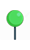
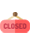

Etape 2
A droite de la carte se trouve les différentes informations de la station
Si le marqueur est vert  il reste au minimum 20 vélos disponibles, si le marqueur est jaune il reste entre 0 et 20 vélos disponilbes
si le marqueur est rouge il ne reste plus de vélos disponibles et si ce marqueur est visible  cela signifie que la station est fermée